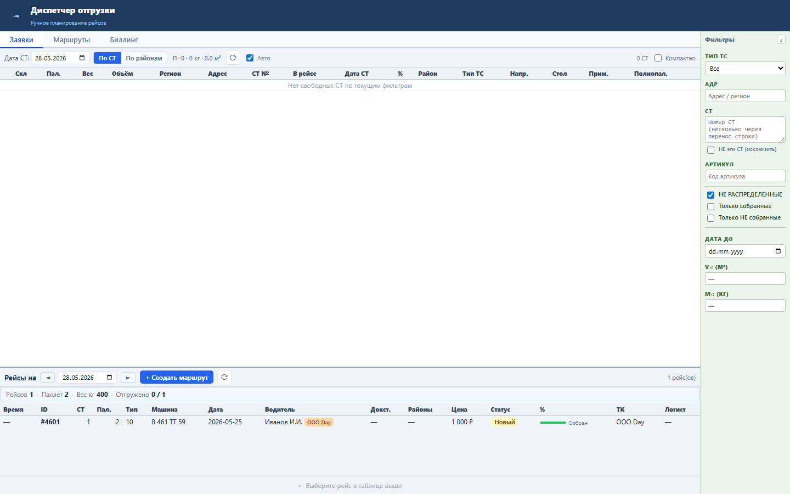
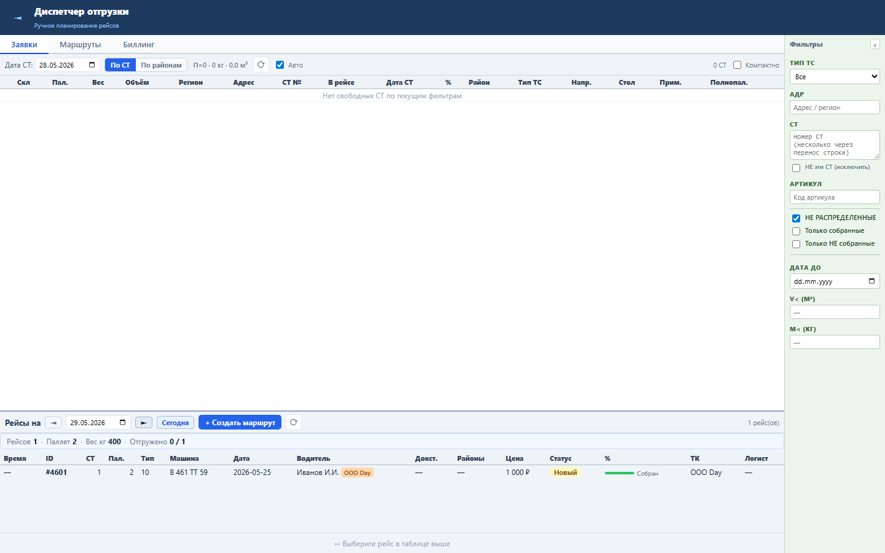
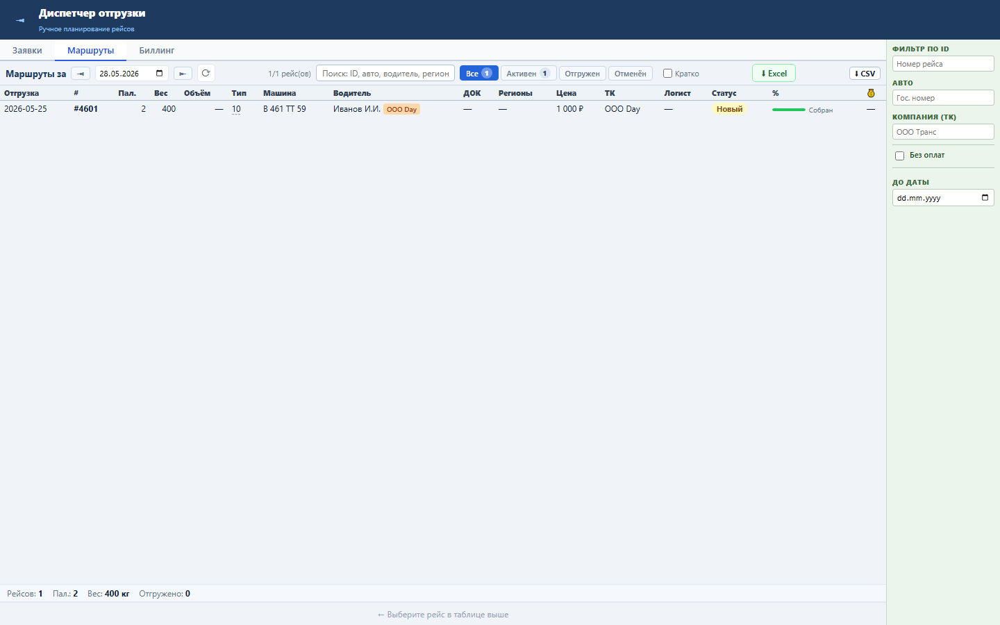
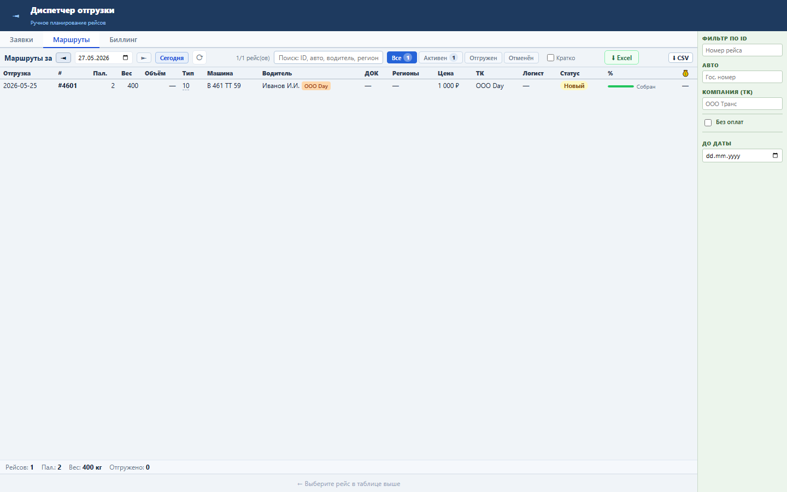

Блок ускоряет просмотр рейсов по соседним датам без ручного редактирования поля даты.
Обе панели используют общий helper shiftDate(iso, days). Вкладка «Заявки» меняет filterDate, вкладка «Маршруты» меняет routeShipDate.
Кнопки ◄ и ► рядом с датой сдвигают день назад или вперёд и запускают обычную перезагрузку списка.
► для следующего дня.◄.



Проверка: functional, UI smoke и load gate пройдены.